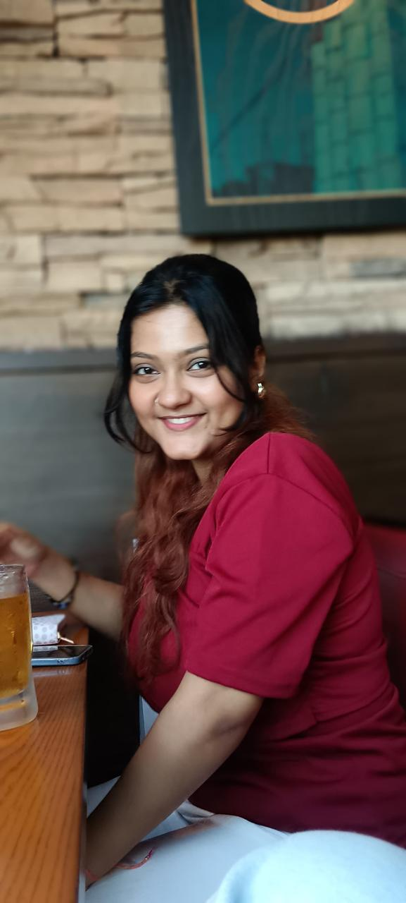
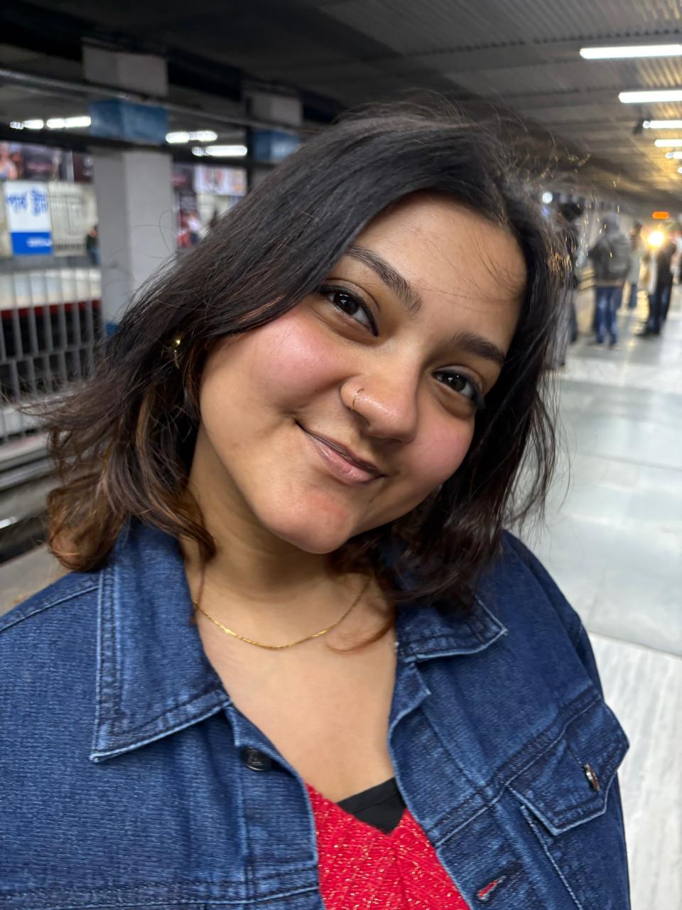
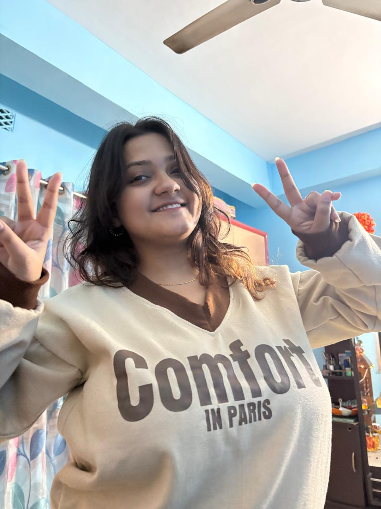
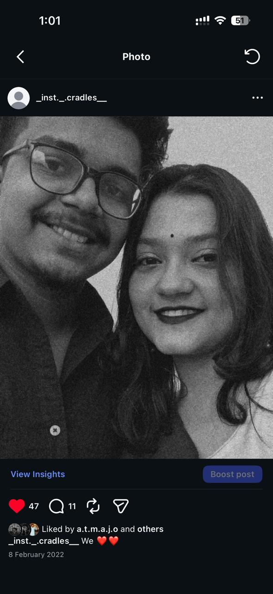
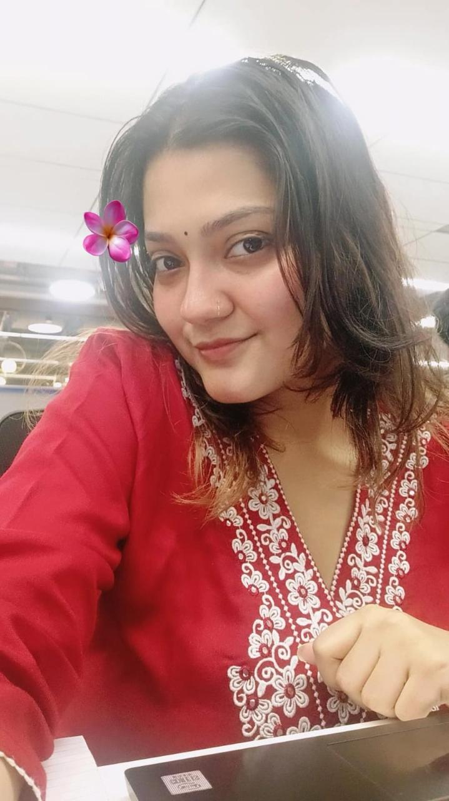
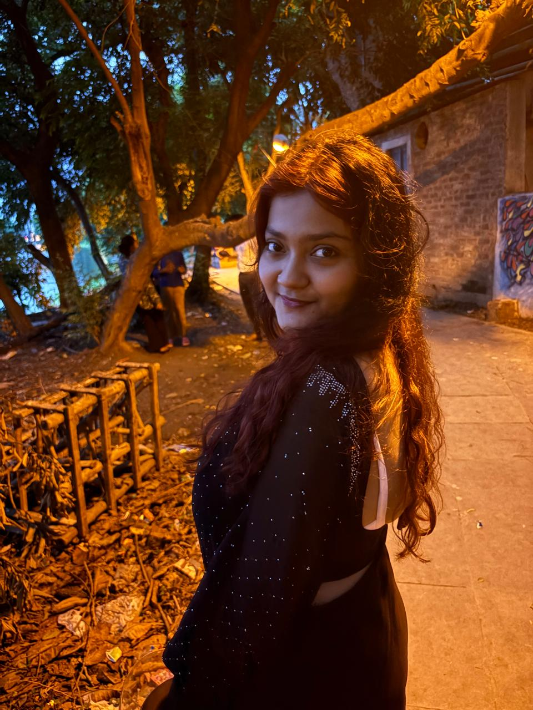

A little surprise from Maity
For Riki
Some people become memories.
Some memories become a part of who we are.
18 September 2004 → another beautiful year
Happy Birthday, Riki 🌷
Today is about celebrating you — your smile, your little quirks, your dreams, and the beautiful person you are becoming.
A little note for you
Dear Riki,
There are some people who pass through our lives and leave behind something that time can never quite erase. You are one of those people for me.
It's unfortunate that we don't get to call each other ours anymore, and maybe life didn't turn out the way we once imagined. But somewhere in my heart, I still hold on to a little hope — a hope that maybe, someday, our paths will find their way back to each other. And if fate has written a different story for us, please don't ever worry about that.
Because no matter where life takes us, I could never hate you for the things that happened between us. I will never blame you for choosing your own path, and I will never regret caring for you. What we had was real, and it will always mean something to me.
I want you to know that I was there for you when you needed me, and even if things are different now, but I will always be there for you no matter what(No one can change it not you too). You will always be precious to me, Riki.
And if someday the world becomes a little too rude to you, if everything feels heavy and you feel like you have nobody standing beside you, remember this — there will always be someone silently wishing for your happiness and ready to stand by your side.
That is my promise to you.
So on your birthday, I don't want to ask you for anything. I just want you to smile, chase your dreams, live freely, and find all the happiness you deserve.
And maybe, somewhere along the way, fate will surprise us again. ❤️
Happy Birthday,
Maity ♡
Little moments






Things I hope for you
More laughter
May you always have reasons to laugh until your cheeks hurt.
Peace
May the things that once felt heavy become lighter with time.
Big dreams
May you chase the things that make your eyes light up.
Good people
May you always be surrounded by people who value your heart.
A story worth remembering
The beginning
Every meaningful story starts with one ordinary moment that later becomes anything but ordinary.
The little things
The jokes, conversations, random calls, silly arguments and tiny moments — those are often the memories that stay.
What remains
People and paths can change. Gratitude for the good memories doesn't have to disappear with them.
One last little thing